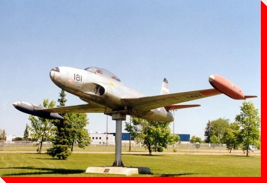

|
LARGE CANADIAN ROADSIDE ATTRACTIONS
PLANES ON PEDESTALS
|
|


CT-133 "Silver Star"
Cold Lake, Alberta
Location: CFB Cold Lake
Manufacturer and Model: Canadair T-133 Silver Star Serial No. 21181
Credit: Bill Gilson of Aerophoto International

Planes on Pedestals
Main
| By Location | By
Type | Wanted Photos of Planes
Large Canadian Roadside Attractions
Copyright @ 2001
- 2007 Ed Solonyka